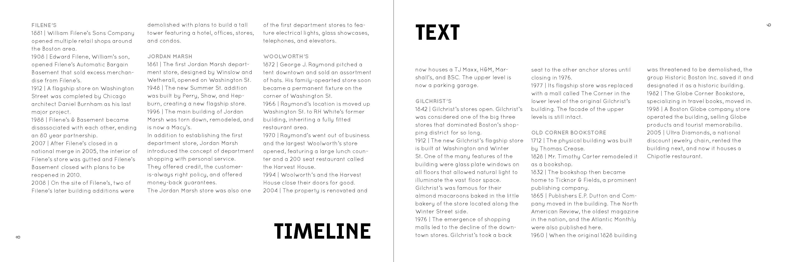
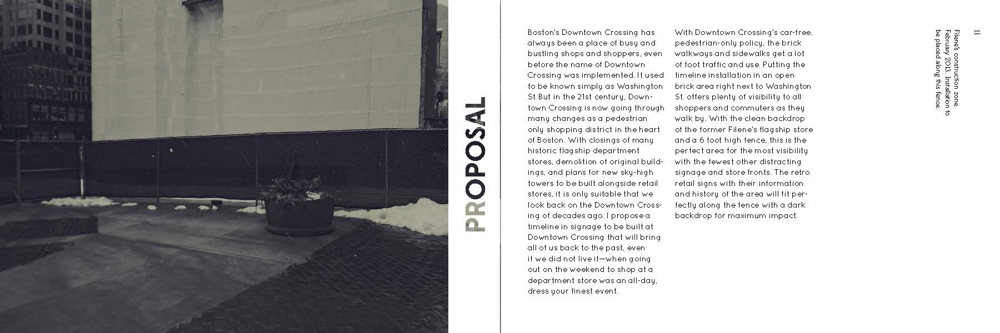
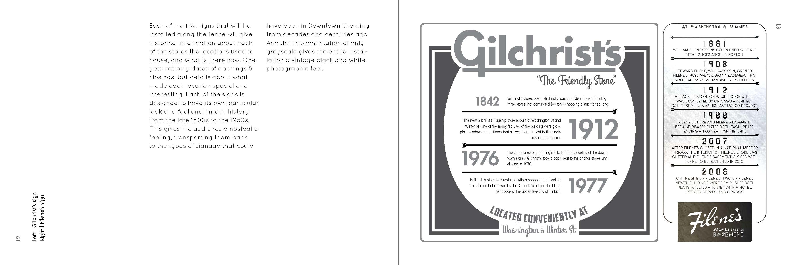
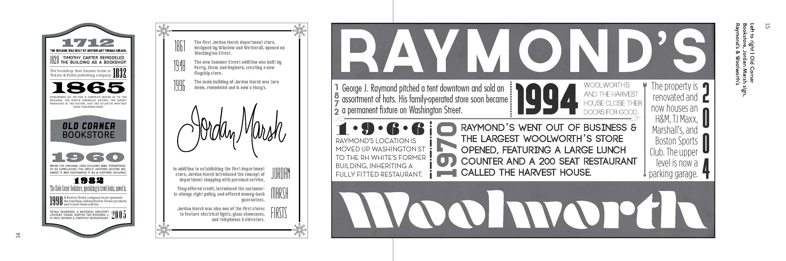
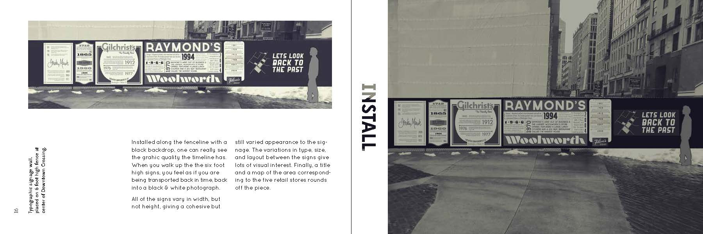
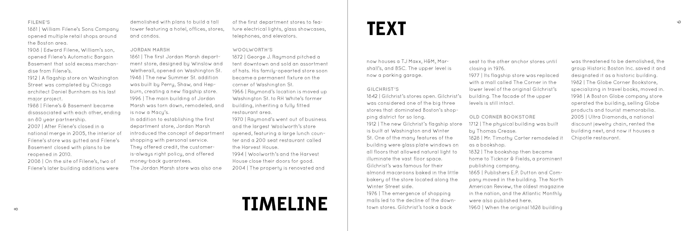
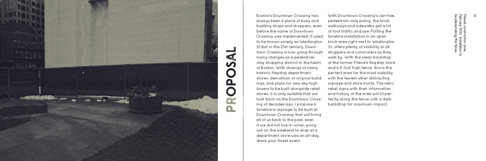
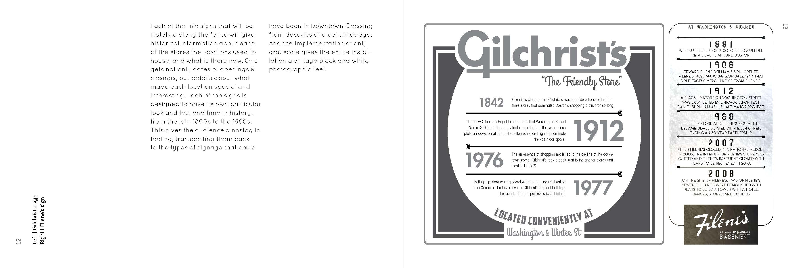
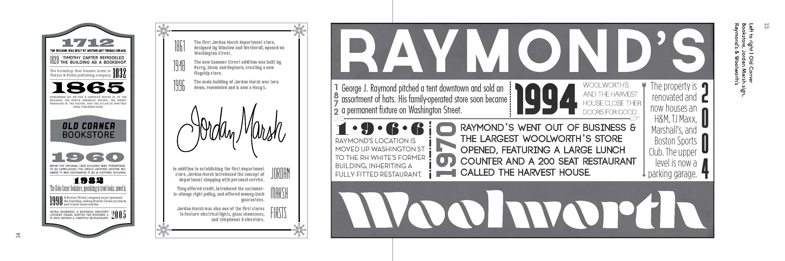
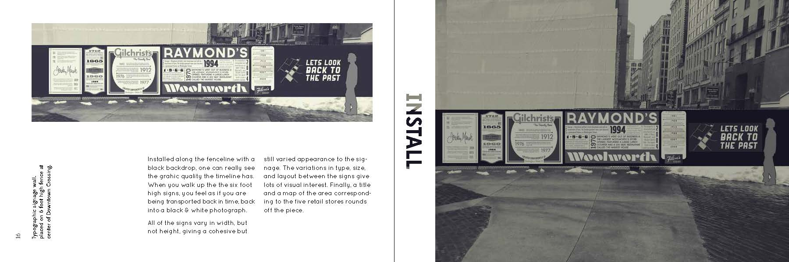
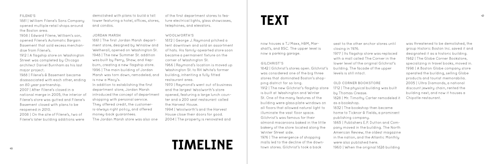
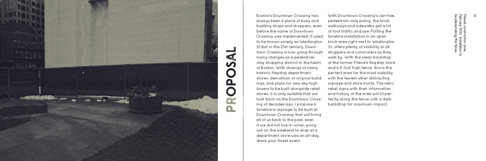
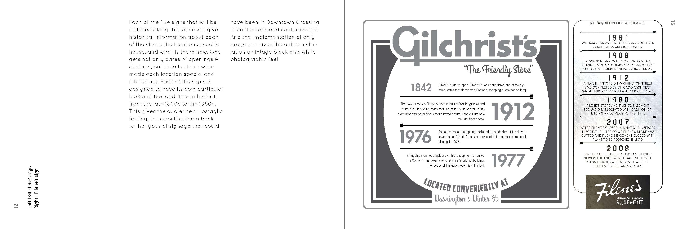
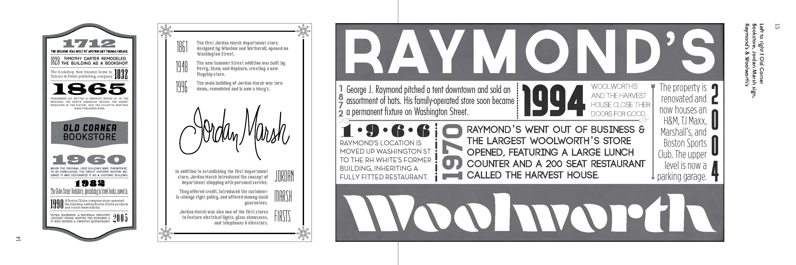
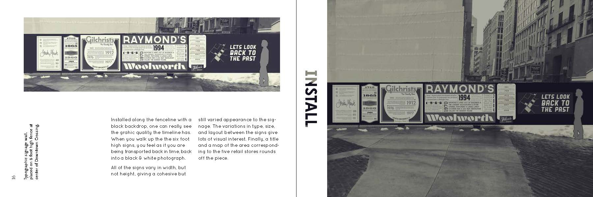
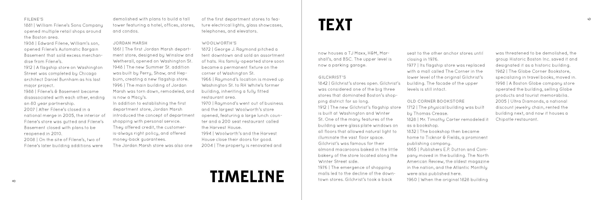
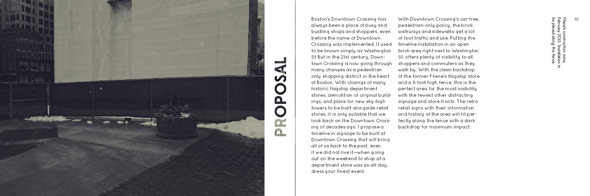
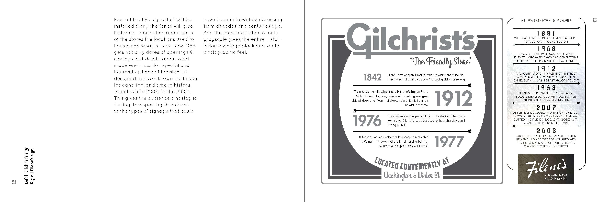
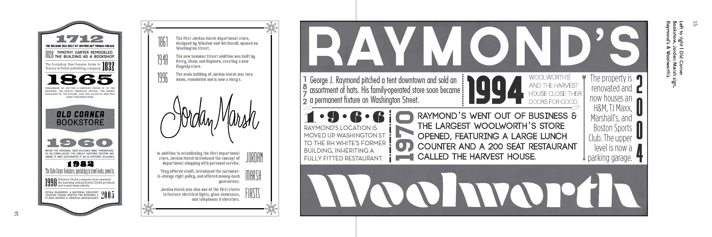
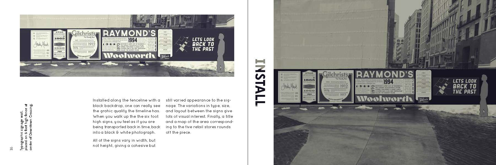
This was a book designed to propose a timeline installation in Boston’s Down- town Crossing. The timeline allows the viewer to experience, and value, this lost something, the old marketplace of Downtown Crossing, as well as educate them on the history.